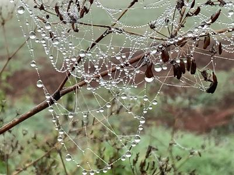
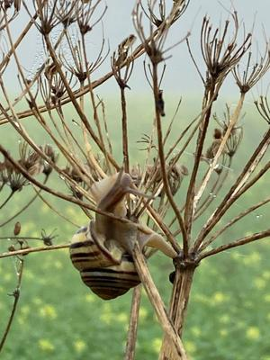

Es liegt noch sehr viel Regen in der Luft
Morgens ist es noch dunkel. Der Blick aus dem Fenster zeigt im Laternenlicht nasse Strassen. Der Herbst hält Einzug. Heute ist der 8. Oktober und damit wieder Zeit für #8sammeln der Miniblogparade von Susanne Wagner. Acht achtsame Momente sammeln. Und der erste Gedanke dazu: „Es liegt noch sehr viel Regen in der Luft.
1.) Auf dem Weg zum Bäcker um halb sieben fisselt es nur leicht. Es ist doch erstaunlich warm. Der Regenwasserbach vor der Tür noch ruhig. Irgendwie friedlich.
2.) Um kurz nach sieben sieht die Welt schon anders aus. Die Fellnase muss raus und es schüttet. Der Bach gurgelt und ist schon ordentlich voll. Regenjacke, Schirm und die Fellnase im roten Regenmantel. Einmal tief durchatmen und raus. An den Füßen Zehensandalen die können ruhig nass werden. Vom Schirm fließt das Wasser in kleinen Bächen. Die Fellnase schaut mich entgeister an. „Dein Ernst?“ Weit kommen wir nicht, da sie beschließt nicht noch nasser zu werden.
3.) Die Fahrt zur Arbeit auf der Autobahn, unter dunklen Wolken mit einer unscharfen Landschaft, ist bedächtiger als sonst. Gischt spritzt immer wieder hoch und ein ständiges Rauschen ist die Hintergrundmusik. Und wieder: „Es liegt noch sehr viel Regen in der Luft.“
4.) In Fulda angekommen hat es aufgehört zu regenen. Ich muss noch kurz in den Supermarkt mir etwas zum Mittagessen besorgen. Nur mit der Regenjacke gehe ich hinein. In der Kühltruhe werde ich in Versuchung geführt. Es gibt Trauben in Schokolade im Angebot da sie heute ablaufen. Ich kann nicht wiederstehen. Alles eingepackt. Und vor der Tür? Ohje es schüttet schon wieder wie aus Kübeln. Ich muss zur Arbeit. Also den Reißverschluß der Tasche zu gemacht. Kaputze aufgezogen und zum Auto. Die Jacke hat von Hellgrün zu Dunkelgrün gewechselt, aber darunter bin ich trocken.
5.) Den ganzen Tag höre ich den Regen bis zum frühen Nachmittag. Im Büro sind die Plissees unten und ich sehen nichts. Mittags halten die Trauben ihr Versprechen. Sie sind knackig und die dunkle Schokolade nicht zu dick und zu süß. Erinnerung an Kindertage auf der Kirmes. Eine wirkliche Mittagspause mit Gedanken mal nicht bei der Arbeit.
6.) Dann kommt doch noch die Sonne durch und es wird trocken. Mein Auto ist ganz gesprenkelt mit Blättern in unterschiedlicher Größe. Ein neues Muster.
7.) Draußen in der Hecke ein wertvolles, zerbrechliches Geschmeide aus lauter Regentropfen am Spinnennetz. So wundervoll anzuschauen.


Ein Diaadem aus Regentropfen
8.) Zum Abschluß in besagter Hecke eine Schnecke. Am dünnen Ast sich hochwindend. Ich bin davon immer wieder faziniert. Das Haus noch feucht. Ich beobachte sie eine ganze Weile und gehe mit diesem Bild in den Feierabend.


Schnecke auf dem Weg nach oben
Kommentare